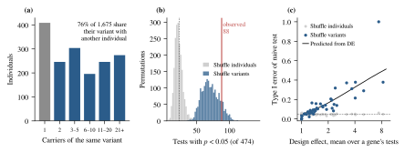
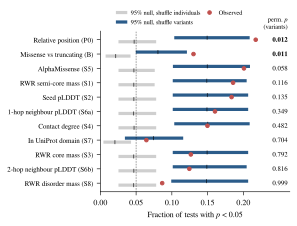
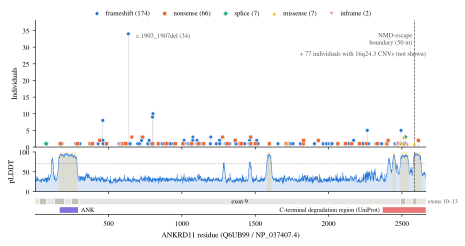
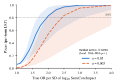

Background. Case-level resources such as phenopacket-store now allow genotype–phenotype correlations to be tested in hundreds of Mendelian cohorts, and AlphaFold supplies structural descriptors for every patient variant. Analyses of these data usually treat each individual as an independent observation.
Methods. From phenopacket-store v0.1.27 we assembled 5,703 individuals in 98 genes with single-fragment AlphaFold models. Variants were annotated with Ensembl VEP on MANE Select transcripts. For each missense variant we computed nine structural or predicted-effect features, including random-walk-with-restart fingerprints on the AlphaFold contact graph and AlphaMissense. We tested each feature, after adjustment for sequence position, against HPO terms within genes, and compared two permutation nulls: one that shuffles features among individuals and one that shuffles them among distinct variants.
Results. In the 44 genes with testable terms (1,675 missense carriers, 670 distinct variants, 474 gene–term tests per feature), 76% of individuals share their variant with another individual, and 74% of such pairs come from the same publication. Shuffling individuals implies that 4.7% of tests reach p < 0.05 by chance. Shuffling variants, the appropriate null for a property of the variant, gives 14.9%: the naive test's false-positive rate is three times the nominal 5%. Kish's design effect, computed from the within-variant phenotype correlation, predicts this inflation without any permutation (73 predicted vs 71 observed false positives; gene-level Spearman ρ = 0.92). Under the variant-level null, only relative position (p = 0.012) and missense-versus-truncating class (p = 0.011) exceed chance. AlphaMissense (p = 0.058), the contact-graph fingerprints (p ≥ 0.11) and pLDDT-based features do not, and none survives spline adjustment for position. For the class test, variant-level permutation reduces per-test discoveries from 32 (analytic Fisher tests, as in GPSEA) to 21, in 9 rather than 15 genes. A KBG syndrome case study (ANKRD11; 333 individuals, 256 with point variants) gives a concordant null, with 80% power only for odds ratios of about 2 per SD or more.
Conclusions. In curated cohorts the variant, not the patient, is the unit of replication for variant-level features. We provide a design-effect diagnostic and a variant-level permutation test that can be added to existing genotype–phenotype workflows.
Genotype–phenotype correlations (GPCs) guide prognosis and counselling in Mendelian disease and point to disease mechanisms. Until recently each GPC was examined in a single published series. The GA4GH Phenopacket schema [1] and phenopacket-store [2], a corpus of literature-derived case reports with Human Phenotype Ontology (HPO) annotations [3], have changed this. With them, GPCs can be tested systematically in many cohorts at once. GPSEA [4] did so for 85 phenopacket-store cohorts and reported 253 significant correlations in 48 of them. It used Fisher exact tests on observed and excluded HPO terms, with genotype classes chosen per cohort.
A second development is that AlphaFold [5,6] provides a predicted structure, with a per-residue confidence score (pLDDT), for nearly every human protein. AlphaMissense [7] provides a structure-aware pathogenicity score for every possible missense change. Pathogenic missense variants cluster in three dimensions [8], and structure-derived mechanism scores differ between phenotypes at the level of genes and diseases [9,10]. A natural next step is to ask whether a patient's variant-level structural context explains which phenotypes that patient has, within a gene, beyond what simpler genotype descriptors already explain.
Both kinds of analysis rest on a shared assumption: individuals are independent observations. In curated cohorts this is doubtful. Recurrent variants are common. Carriers of the same variant are often relatives or members of one case series, and their phenotypes were recorded by the same authors with the same checklist. A structural feature is a property of the variant, so it takes the same value for every carrier. If carriers of one variant resemble each other for any reason, true variant-specific biology included, an individual-level test counts one variant many times. This is pseudoreplication [11], and the variance inflation it causes is the design effect of cluster sampling [12,13].
We started from PhenoBridge, an open pipeline that computes random-walk-with-restart (RWR) fingerprints on AlphaFold contact graphs, and asked whether such features carry within-gene phenotype signal across phenopacket-store. The decisive finding concerned calibration. Here we (i) quantify variant recurrence in phenopacket-store; (ii) show that individual-level inference is miscalibrated and that a closed-form design effect predicts by how much; (iii) evaluate nine structural or predicted-effect features against position under a valid, variant-level null; (iv) re-score a GPSEA-style variant-class test; and (v) report a KBG syndrome case study with an explicit power analysis.
We parsed all 10,377 phenopackets of phenopacket-store v0.1.27 (699 genes) [2]. Every variant was re-annotated with the Ensembl Variant Effect Predictor (VEP) REST service [14] on the MANE Select transcript [15]. VEP protein positions agreed with the curated HGVS p. strings for 99.66% of the 9,086 variants that had both. Structures were the AlphaFold human proteome models (v6) [6,16]. Proteins longer than 2,700 residues are distributed only as overlapping fragments, so seven genes with ≥20 eligible individuals were excluded for that reason (ASPM, FBN1, ITPR1, KMT2D, NF1, NIPBL, UBR5). AlphaMissense scores [7] were matched to 2,961 of 2,964 missense records in the selected genes. HPO annotations were propagated by the true-path rule: an observed term implies its ancestors and an excluded term implies its descendants. Cells that received both calls were dropped. Unannotated cells were left missing and never coded as absent.
An individual was included if they had exactly one causative allele (heterozygous or hemizygous) that mapped to a protein position. A gene was included if it had a single-fragment AlphaFold model and at least 20 such individuals. This selected 98 genes with 5,703 individuals, 5,041 of whom had structural features. Biallelic individuals were analysed only in a sensitivity analysis. A gene–term pair was tested if, among the carriers analysed, at least five had the term observed and at least five had it excluded. This rule was re-applied for each feature after removing carriers with a missing value, so test counts differ slightly between features.
For each residue we built the Cα contact graph G (edges at ≤8 Å) and split residues into Core, Semi-core and Disorder classes by the protein's own pLDDT quantiles (≥q0.9; q0.5–q0.9; ≤q0.5). The RWR profile seeded at residue s was obtained exactly as
using one sparse LU factorisation per protein. This matches the iterative PhenoBridge implementation to 2×10−10. The fingerprint component for a region is the stationary mass that falls in it [17–19]. The features were:
Within each gene, every continuous feature except P0 was residualised on relative position by carrier-weighted least squares (in genes with ≥3 carriers). A structural feature therefore had to add something beyond where the variant lies along the chain.
Analysis A (primary; missense carriers). For every eligible gene–term pair and feature we compared the feature between individuals with the term observed and those with it excluded. Continuous features used a two-sided Mann–Whitney test (normal approximation with tie correction). S7 used Fisher's exact test and required carriers both inside and outside domains. Analysis B (reference; all mappable individuals). For every gene–term pair we ran Fisher's exact test of missense against PTC (nonsense or frameshift) carriers. Genes needed at least five missense and five PTC carriers. This is the closest analogue of GPSEA's most common predicate [4].
For each feature, the global statistic was the number of tests with p < 0.05 across all genes and terms. Permutation keeps every gene's phenotype matrix intact, so the dependence between overlapping HPO terms is preserved. We compared two schemes, each applied within genes:
The variant-level scheme preserves whatever makes carriers of one variant alike and asks only whether variants with high feature values differ from variants with low ones. Each scheme used B = 2,000 permutations; empirical p = (1 + #{Tb ≥ Tobs})/(1 + B) [20]. The same permutations gave a per-test permutation p, to which we applied Benjamini–Hochberg correction [21] at q < 0.1 within each feature. We also report Storey's π1 [22]. With 2,000 permutations no per-test p can fall below 5×10−4, so per-test discoveries are conservative under both schemes.
Let the analysed carriers for a test fall into variant clusters of sizes mk, and let ρ be the one-way ANOVA intraclass correlation of the binary phenotype within variants (truncated at 0). Because the feature is constant within clusters, the variance of a rank or correlation statistic is inflated by the design effect [12,13]
and a nominal 5% test rejects with probability about 2[1 − Φ(1.96/√DE)]. This is an approximation: it assumes the feature is constant within variants and relies on a normal approximation. We computed DE for every primary S1 test. The pooled prediction was compared with the main variant-level null (2,000 permutations), whose rejection rate is the naive test's actual type I error under that null. Per-gene rates came from a separate run of 500 variant-level and 500 individual-level permutations per gene.
We fixed the control genes before any association was computed, using the literature and GPSEA [4]. Positive controls were LMNA (Ig-fold vs rod) [23], TBX5 (G80R cardiac vs R237 limb) [24], SPTAN1 (R19W spastic paraplegia) [25], SETD2 (R1740W) [26] and IKZF1 (N159) [27]. Null controls were STXBP1 [28], POGZ and EHMT1. Sensitivity analyses, each with 400 permutations, varied:
ANKRD11 (KBG syndrome) is the gene for which PhenoBridge was first developed [29–31]; its cohort is almost entirely truncating. Its separate analysis plan specified nested logistic likelihood-ratio tests of log10 Semi-core mass, adjusted for VEP variant class and position, on 34 HPO terms with ≥10 observed and ≥10 excluded explicit calls. The analysis used the 256 individuals with point variants. Global inference used an omnibus permutation test with 5,000 within-stratum permutations. Sparse terms used Firth regression [32]. Power was estimated by simulation from each term's fitted baseline model (1,000 simulations per effect size).
The multi-gene analysis plan, including features, eligibility, controls and sensitivity analyses, was written and version-controlled before any multi-gene association was computed. One amendment was added after a 20-permutation pilot but before the final run: variant-level permutation became the decisive test and the spline sensitivity was added. The pilot had shown excess small p-values for every feature. Because of this, the designation of the variant-level null as primary is post hoc. Other deviations from the plan:
The following are exploratory: S8, per-test permutation discoveries, the class-test discovery counts, the control-gene permutation counts, the per-gene calibration, the design-effect analysis and the α = 0.5 spline check.
Analysis A included 2,053 single-allele missense carriers with structural features. In the 44 genes with at least one eligible term there were 1,675 carriers of 670 distinct variants, contributing 474 gene–term tests per feature (316 distinct HPO terms; median 28 carriers per test, range 10–205). Of these carriers, 1,266 (76%) share their variant with at least one other individual (Fig. 1a).
For S1, shuffling features among individuals gave a null mean of 22.2 tests with p < 0.05 (4.7% of 474), close to the nominal 23.7. Shuffling among variants gave a null mean of 70.6 (14.9%), 3.2 times higher (Fig. 1b). Every continuous feature had the same pattern, with null means of 70.4–71.2 (Table 1), because the inflation comes from the phenotypes and the cluster structure, not from the feature.
Per gene, the naive test's type I error had a median of 9.6% (individual-level shuffle: 4.7%) and exceeded 10% in 21 of 44 genes. Among genes with more than one test, it was highest in SPTAN1 and SAMD9L (38%), SETD2 (37%), TBX5 (31%) and LMNA (29%). Carriers-per-variant alone predicted it poorly (Spearman ρ = 0.17). The design effect, which also uses the within-variant phenotype correlation, predicted it well: Spearman ρ = 0.91 for the mean DE plotted in Fig. 1c and 0.92 for the predicted error rate (0.90 and 0.92 in the 35 genes with ≥3 tests).
The diagnostic therefore needs no permutation: a curator can compute DE from the cohort table alone. It was, however, developed and checked on the same data.

| Feature | Obs. | Null indiv. | Null variant | p variant | p spline | Disc. ind./var. |
|---|---|---|---|---|---|---|
| P0 relative position | 103 | 22.4 | 70.8 | 0.012 | 0.022 | 65 / 8 |
| S5 AlphaMissense | 95 | 22.2 | 70.7 | 0.058 | 0.187 | 69 / 0 |
| S1 RWR semi-core | 88 | 22.2 | 70.6 | 0.116 | 0.399 | 64 / 0 |
| S2 seed pLDDT | 87 | 22.2 | 70.9 | 0.135 | 0.748 | 33 / 0 |
| S6a 1-hop pLDDT | 76 | 22.1 | 70.7 | 0.349 | 0.823 | 26 / 0 |
| S4 contact degree | 71 | 22.3 | 71.2 | 0.482 | 0.853 | 26 / 3 |
| S3 RWR core | 60 | 22.2 | 70.8 | 0.792 | 0.384 | 29 / 0 |
| S6b 2-hop pLDDT | 59 | 22.2 | 70.6 | 0.816 | 0.853 | 25 / 0 |
| S8 RWR disorder | 41 | 22.1 | 70.4 | 0.999 | 0.988 | 12 / 0 |
| S7 in domain (Fisher) | 15 | 4.8 | 17.3 | 0.704 | 0.726 | 9 / 0 |
| B missense vs PTC | 71 | 11.7 | 43.9 | 0.011 | — | 47 / 21 |
Under the individual-level null every feature appeared significant (p ≤ 0.011; p ≤ 0.001 for all but S8; Table 1). Under the variant-level null only relative position exceeded chance (103 observed vs 70.8 expected; p = 0.012; Fig. 2). AlphaMissense was borderline (p = 0.058). The primary structural feature, S1, did not reach significance (p = 0.116), and neither did seed pLDDT, neighbourhood pLDDT, contact degree, Core or Disorder mass, or domain membership (all p ≥ 0.135).
With position modelled by a spline, every structural feature and AlphaMissense lost what signal it had (S1 p = 0.40; S5 p = 0.19). Storey’s π1, which is computed from the analytic p-values and so does not depend on the null, ranged from 0.11 to 0.29 across continuous features and did not separate them. Per-test discoveries fell from 12–69 per continuous feature (individual scheme) to 0 for every structural feature except contact degree (3). Relative position kept 8 discoveries:
No structural feature showed detectable signal beyond position in this resource, and the RWR fingerprints did no better than the simpler pLDDT features they summarise. Given the null SD, only effects that add some two dozen nominal tests across 44 genes would be detected.
One feature deviated in the other direction. S8 had fewer nominal tests than its variant-level null (41 vs 70.4; lower-tail p = 0.005). The count statistic is one-sided, and we have no specific explanation. It shows that the variant-level null is not exact for every feature. One known source of mild conservativeness is that observed residuals are orthogonal to position, whereas permuted residuals are not.

The missense-versus-PTC test (545 tests in 33 genes, with 2,450 missense or PTC carriers) remained significant under the variant-level null (71 observed vs 43.9 expected; p = 0.011). Variant class is a real source of within-gene phenotype variation, as GPSEA reported [4]. The number of discoveries changed substantially, however:
Ontology propagation makes these counts partly redundant. The 21 variant-level discoveries reduce to 15 distinct carrier contrasts (seven PTPN11 terms share one), against 25 of the 32 analytic ones. Six genes with analytic discoveries had none at variant level: EHMT1, GLI3, SOCS1, TBX5, TGFB2 and TGFBR1.
The losses are informative. In SPTAN1, spastic paraplegia separates missense from truncating carriers analytically (p = 2×10−4), but the signal comes from the single recurrent p.Arg19Trp, so at variant level p = 0.58. Motor axonal neuropathy, which is shared by many distinct truncating variants, survives (p = 0.003). Likewise, LMNA lipodystrophy (analytic p = 3×10−6) is carried by the Arg482 hotspot, and its variant-level p is 0.14.
| Gene | Expected | N/V | T | P0 | S1 | S5 |
|---|---|---|---|---|---|---|
| LMNA | positive | 218/45 | 70 | 22 | 7 | 11 |
| TBX5 | positive | 80/20 | 13 | 1 | 1 | 0 |
| IKZF1 | positive | 56/17 | 16 | 0 | 0 | 3 |
| SPTAN1 | positive | 34/13 | 7 | 0 | 0 | 0 |
| SETD2 | positive | 27/13 | 13 | 0 | 0 | 0 |
| EHMT1 | null | 28/18 | 13 | 0 | 1 | 0 |
| POGZ, STXBP1 | null | 10/9, 248/105 | 0 | no eligible terms | ||
Table 2 shows that the variant-level test keeps the dominant, multi-variant LMNA signal. It still distinguishes rod-domain cardiac and muscle phenotypes from Ig-fold lipodystrophy across 45 variants. It attenuates the positive controls whose published signal rests on one or two residues: TBX5 G80R and R237Q (19 and 21 carriers), SPTAN1 R19W and SETD2 R1740W. This is not a loss of sensitivity to a feature effect. A residue-specific effect is one observation of a structural property, however many carriers it has. Confirming it as a structural rule needs further variants with the same property, not more carriers of the same one. The null control EHMT1 gave 1 nominal test of 13 for S1 (0.65 expected). STXBP1 and POGZ had no term with five observed and five excluded missense carriers. No positive control specifically tests sensitivity to a structural effect, so the pipeline’s power for a true 3D effect under the variant-level null remains untested.
The variant-level conclusions held across the sensitivity analyses. Relative position stayed significant:
S1 stayed non-significant with explicit calls (p = 0.10), at α = 0.15 (0.060) and with pLDDT ≥ 50 (0.11). At α = 0.5, S1 reached p = 0.010. This and S5 in the α = 0.15 set (p = 0.042) were the only nominal results among 45 feature-by-sensitivity cells; several cells repeat identical data, because α changes only S1, S3 and S8. In an exploratory check with 1,000 permutations, the α = 0.5 result disappeared when position was modelled by a spline (p = 0.33; position itself p = 0.010). The biallelic analysis yielded only two eligible tests and was uninformative.

The ANKRD11 cohort shows the same issues in one gene.
Cohort composition. All 333 individuals cite one review but come from 41 original sources, and 58 fall in 22 family clusters. VEP classes were:
So 96.5% of point variants are truncating (Fig. 3). One frameshift, c.1903_1907del, is carried by 34 individuals. Six of the seven missense variants cluster in aa 2491–2585, the confident C-terminal segment, where functional work has placed pathogenic missense variants [33].
NMD prediction. By the 50-nt rule, 238 of 240 PTCs are predicted to trigger NMD. ANKRD11 has 13 exons, and its giant exon 9 is not the last. Most PTCs (224) lie in this 6,578-nt exon, however, where NMD efficiency is reduced [34], and mutant protein has been reported to accumulate [35]. NMD is therefore a rule-based prediction here, not an established fact.

Primary test. In the pre-specified nested models (256 point-variant individuals, 34 terms), no term reached p < 0.05 (minimum p = 0.080, ADHD; minimum q = 0.79), and the omnibus permutation p was 0.70.
Power. The power analysis bounds what this null means (Fig. 4). The median minimum detectable odds ratio was 1.96 per SD at α = 0.05 and 2.42 at α = 0.005, and mean power across terms at OR 1.5 per SD was 41%. The data exclude large structural effects, not modest ones.
Secondary signal. One secondary component, Disorder mass, was associated with intellectual disability (OR 0.36 per SD, p = 2.5×10−4; Bonferroni-adjusted p = 0.043 across 170 tests). It was robust in every exploratory check, including one per family and leave-one-source-out. It rests, however, on 25 individuals with ID excluded, an absence that may reflect age at report. We treat it as a hypothesis for replication.
Published claims. Published KBG claims [31] were reproduced in direction in the same individuals; this checks the data and is not an independent replication. Effects were smaller for exon 9 and short stature and for c.1903_1907del, and none reached q < 0.05.
Correction of our earlier draft. An earlier draft of this work used a regex-based truncation flag and stated that 69.5% of point variants were truncating. That flag misclassified 73 of 256 point-variant individuals (28.5%), including 65 of 66 nonsense-SNV carriers. Correcting it does not change the null result.
The central finding is about inference, not structure. In curated case-level data, the carriers of one variant are not independent. Three-quarters of missense carriers share their variant, and most such pairs come from one publication. Tests that treat individuals as exchangeable reject about three times too often. A feature can therefore look strongly associated with phenotype while carrying no more information than an arbitrary label attached to each variant. The size of the problem is approximately predictable: Kish's design effect, computed from the phenotype intraclass correlation within variants, reproduced the permutation-based error rate across 44 genes.
Which null is appropriate? For a feature that is a property of the variant, such as a structural descriptor, a pathogenicity score, a domain or a variant class, the variant is the unit to which the “treatment” is assigned. The variant-level permutation is then the appropriate null, as in cluster-randomised trials [13]. The individual-level test is not wrong as a test of whether carriers differ; it answers a different question. Its null hypothesis is still meaningful. It allows carriers of a variant to be alike for any reason, and asks whether the feature orders variants by phenotype. The price is that effects carried by one or two hotspot variants cannot be established as feature effects. That is the appropriate conclusion: 62 carriers of LMNA p.Arg482Trp, largely from a few series, are one data point about what an Arg482-like residue does. Specific-variant predicates (“Arg482Trp vs other”) remain valid questions. For them the replication unit is the independent family or publication, which the phenopacket identifiers make easy to count.
Implications for GPSEA-style analyses. GPSEA’s Fisher tests [4] are individual-level tests. Our class analysis is not a re-analysis of GPSEA’s hand-chosen hypotheses, but it suggests that some reported correlations in cohorts with strong recurrence may not survive variant-level inference. In our class test, 6 of 15 genes with analytic discoveries lost them. We suggest three additions, all simple to implement:
Structural features. Once position is accounted for and inference is valid, AlphaFold-derived context, including network-propagation fingerprints, adds no detectable within-gene phenotype information in phenopacket-store. AlphaMissense comes closest. This is not evidence that structure is irrelevant to phenotype. Several factors work against detection:
Earlier positive structure–phenotype studies worked at the level of gene families or diseases [9,10], where variant counts are larger. The KBG case shows a related limit. In a cohort that is 96.5% truncating, the structural feature mostly records where truncations fall in a largely disordered protein. With 256 point-variant carriers the study had 80% power only for odds ratios of about 2 per SD or more.
Limitations.
Conclusion. Recurrent variants make individual-level genotype–phenotype tests in curated cohorts anti-conservative by a factor that a one-line design-effect calculation approximately predicts. Under valid, variant-level inference, sequence position and variant class carry within-gene phenotype signal in phenopacket-store; AlphaFold structural features, as implemented here, add no detectable signal beyond position.
All code is available at github.com/sparshsumani/phenobridge:
Inputs are public: phenopacket-store v0.1.27, HPO, the AlphaFold human proteome v6, AlphaMissense, and the Ensembl, UniProt and InterPro REST services. Permutation seeds are fixed (20261103; 20261104 for follow-up analyses).